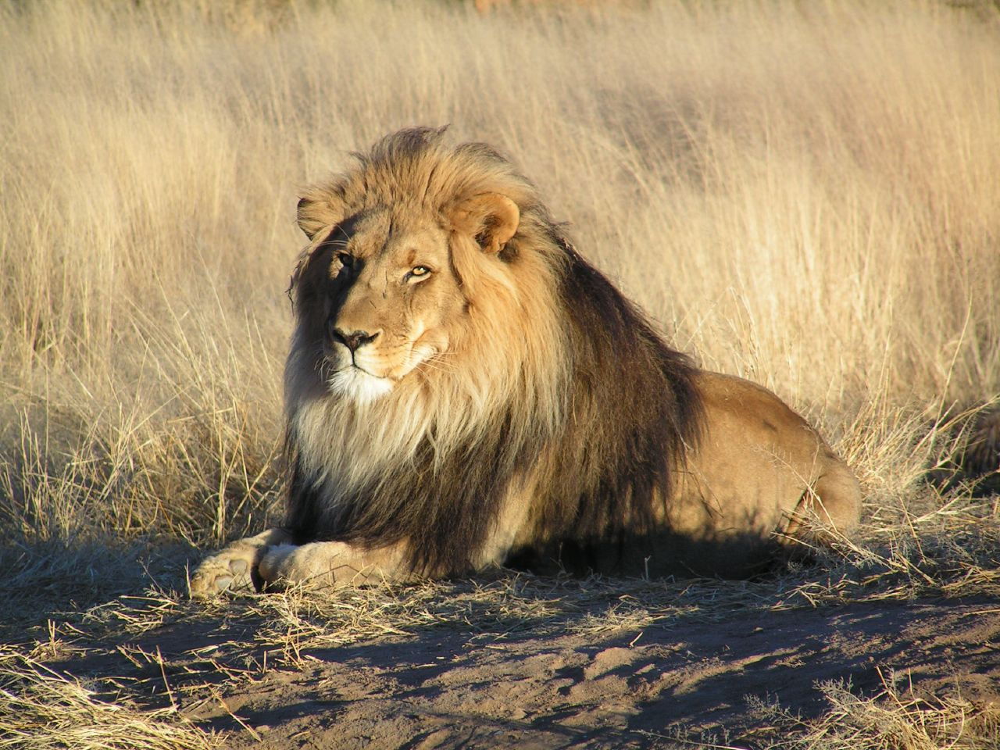
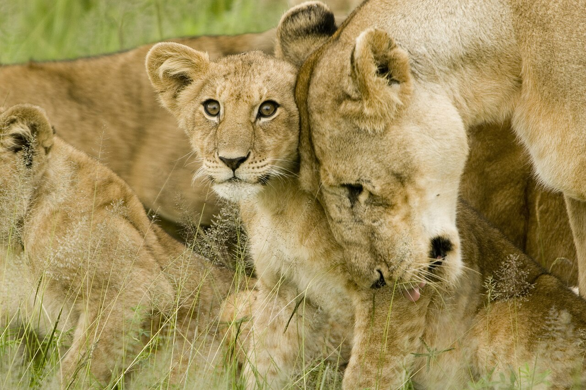

🦁 Zamba: The Greatest Lion That Ever Lived
A Lion Raised With Love!
Zamba was a real orphan lion cub who became a movie star. No whips, no fear — just love, trust and 18 years of friendship!

🌅 Chapter 1: An Orphan Cub Finds a Father
My name is Zamba, and I am a real lion — not a fairy-tale lion, but a breathing, purring, blanket-stealing lion who lived in California. My story begins with sadness. When I was only four months old, small enough to curl up in a laundry basket, I lost my family and had no home, no warm mane to snuggle into, no mother to teach me the ways of the wild. I was carried across the world by kind friends until I arrived at a sunny ranch in Santa Monica, where orange trees perfumed the air and a gentle man with kind eyes was waiting at the gate.
That man was Ralph Helfer, one of Hollywood's animal trainers. In those days, most trainers ruled with whips, chains and fear. They shouted that a lion could never be trusted — that one day I would look at my keeper and see dinner instead of a friend. They called Ralph a fool for trying something different. But Ralph believed in a brand-new idea called affection training: teaching animals with love, trust, patience and kindness, never with pain or fright. He looked into my round cub eyes and said, We will prove them wrong together, little one. And from that very first day, he kept his promise.
🛏️ Chapter 2: The Bed Hog and the Bad Tooth
Ralph raised me like his own child, and our ranch became my whole kingdom. The funniest part of every day was bedtime. Ralph had a bed built big enough for a man and a lion, and I claimed most of it! I sprawled across the mattress like a furry king, stole all the blankets with my heavy paws, and snored so loudly that visitors laughed from the hallway. Ralph would tug one tiny corner of blanket back and whisper, Zamba, you are a bed hog! And I would purr like a tractor in reply.
Life was not all games, though. One winter I grew a painful abscess deep in my tooth, and my whole cheek swelled until I could hardly eat. Any wild lion would have lashed out, but Ralph knelt beside me, stroked my mane, and spoke in his calm, low voice until I lay still. Very, very gently, he helped my sore tooth while I trembled — and though his fingers were inches from my fangs, I never once snapped, because love had built a bridge of trust between us stronger than any chain. As the years passed I grew into a huge golden-maned lion, heavy as three grown men, yet I followed Ralph like a shadow. For eighteen wonderful years, we were father and son in every way that matters.
🎬 Chapter 3: Lights, Camera… ROAR!
When I was fully grown, with a mane like a golden sunrise, Hollywood came calling. Directors had heard of the lion who worked without chains, and they wanted me in their motion pictures and television shows! Picture it: giant cameras like black metal elephants, blazing lights hotter than the savanna sun, and dozens of people holding their breath as I padded softly onto the set. Ralph always stood just out of sight, giving me the secret hand signals we had practised with treats and hugs, and I would sit, walk or roar exactly on cue. The crews gasped. No lion had ever acted with such calm happiness.
My greatest adventure was a movie called The Lion, filmed far away in real Africa in 1960. We flew across the ocean to sweeping grasslands where acacia trees stood like umbrellas and elephants rumbled in the distance. But movie life was not a holiday. The days stretched long and boiling hot under the sun, and I grew cranky and tired, just like you do after a long school day with no nap. Snakes curled in the grass around our garden house, and every rustle made my ears prick. Then came the scariest day of all: bad men crept in at night and kidnapped me, hoping to sell a famous lion! But they had stolen the wrong cat. I refused to eat from strangers, I roared until the trees shook, and I would not obey a single order without Ralph. The frightened kidnappers soon abandoned me by the roadside, and Ralph came racing to bring me home. A lion who only obeys love, you see, is impossible to steal.

Photos via Wikimedia Commons (freely licensed wildlife photography)
🌅 Chapter 4: The Luckiest Lion Alive
Back home in California, our ranch had grown into a noisy paradise of more than a thousand animals. Elephants rumbled, tigers splashed, chimps chattered in the trees, and Ralph loved every single one exactly the way he loved me. Visitors stared in wonder as I strolled beside him with no leash, no cage and no whip anywhere in sight, just an invisible rope of trust tying our hearts together. Trainers from all over the world came to watch us, and slowly, slowly, Hollywood began to change its cruel old ways, because what Ralph and I had proved together could not be ignored.
At last my golden mane turned silver and my mighty roar grew soft as a purr. On my final evening, I lay with my great head resting on Ralph's lap while the sun melted into the Pacific Ocean and the orange trees breathed their sweet perfume over us. He stroked my brow and whispered, Thank you, old friend. You showed the world that respect is stronger than fear. I closed my eyes knowing I was the luckiest lion that ever lived, an orphan cub who became a movie star and was loved every single day of his eighteen years. So here is my message to you, small reader with a big heart: be kind to every creature, great and small, for love can tame even the wildest heart, and gentleness is the greatest strength of all.
📚 Word count: about 300 words of story. Zamba (2005) by Ralph Helfer is a true tale of affection training!
🍖 Zamba's Movie Treats!
Tap to give Zamba a treat! Fill 5 juicy steaks to hear his happy ROAR!
Zamba is waiting… be gentle!
🧠 Comprehension Quiz
1. How did orphan cub Zamba meet Ralph, and what did others warn?
2. What is affection training, and how did the bad tooth prove it?
3. What was funny about bedtime at the ranch?
4. Tell the story of The Lion film and the kidnapping.
5. How does Zamba's tale end, and what message does he leave?